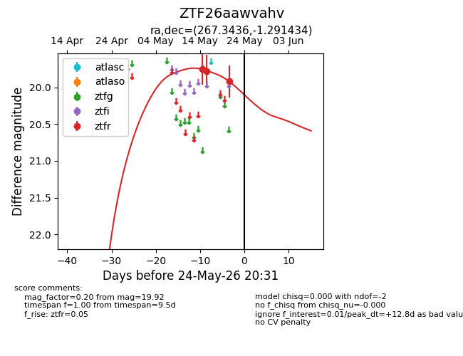
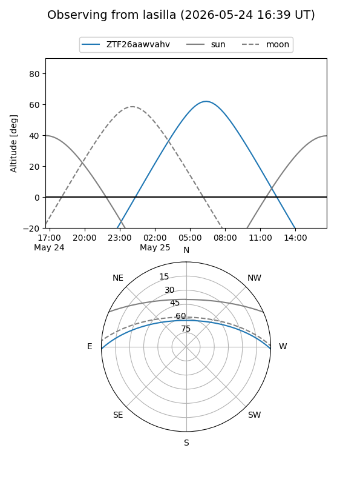
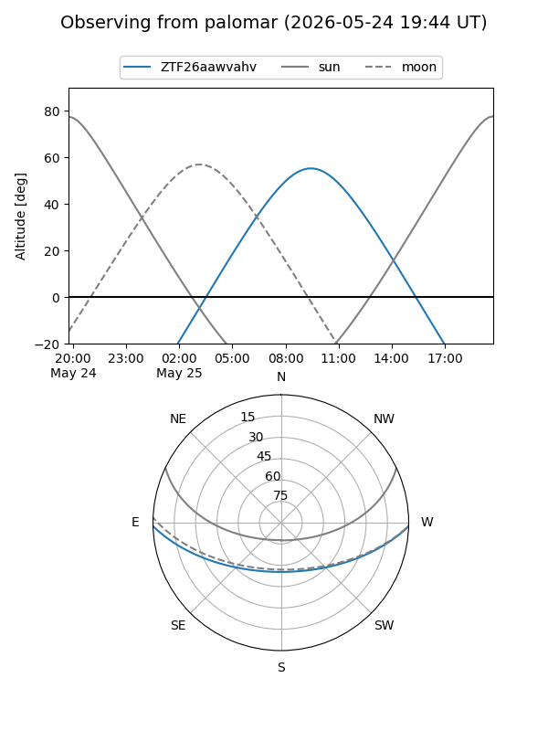
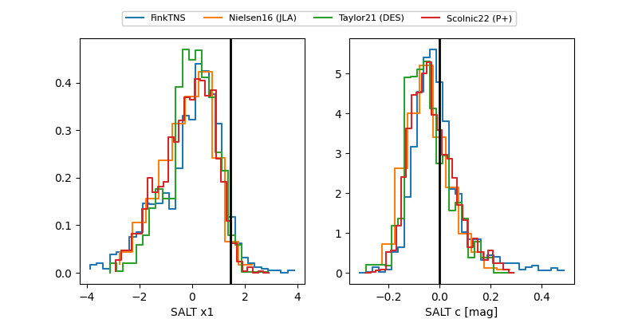

ZTF26aawvahv
Target ZTF26aawvahv at 2026-05-24 20:32
Aliases and brokers:
lsst-FINK: link
lsst-Lasair: link
lsst-ALeRCE: link
ztf-FINK: link
ztf-Lasair: link
ztf-ALeRCE: link
alt names
ZTF26aawvahv (ztf,fink_ztf)
Coordinates:
equatorial (ra, dec) = 267.3436,-1.29143
equatorial (HMS+DMS) = 17:49:22.47,-01:17:29.16
galactic (l, b) = (24.5461,+13.16397)
Flags:
Photometry:
last ztfr=19.92
3 ztfr detections
Lightcurve

Visibility


Additional plots
